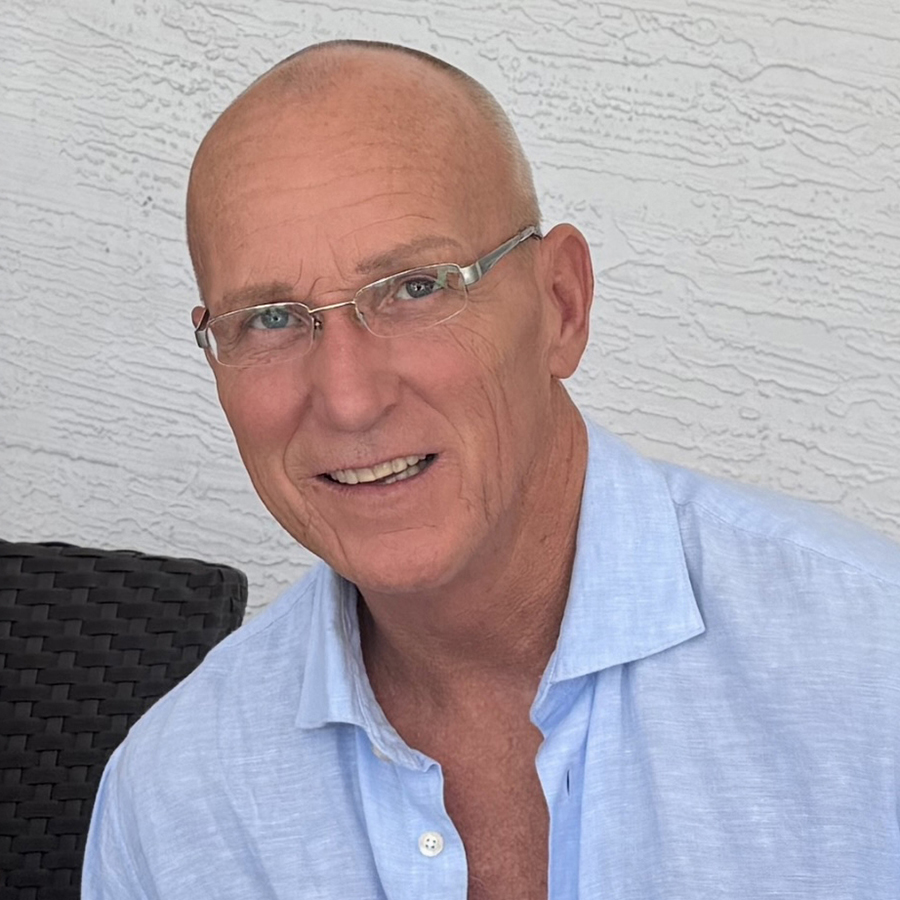
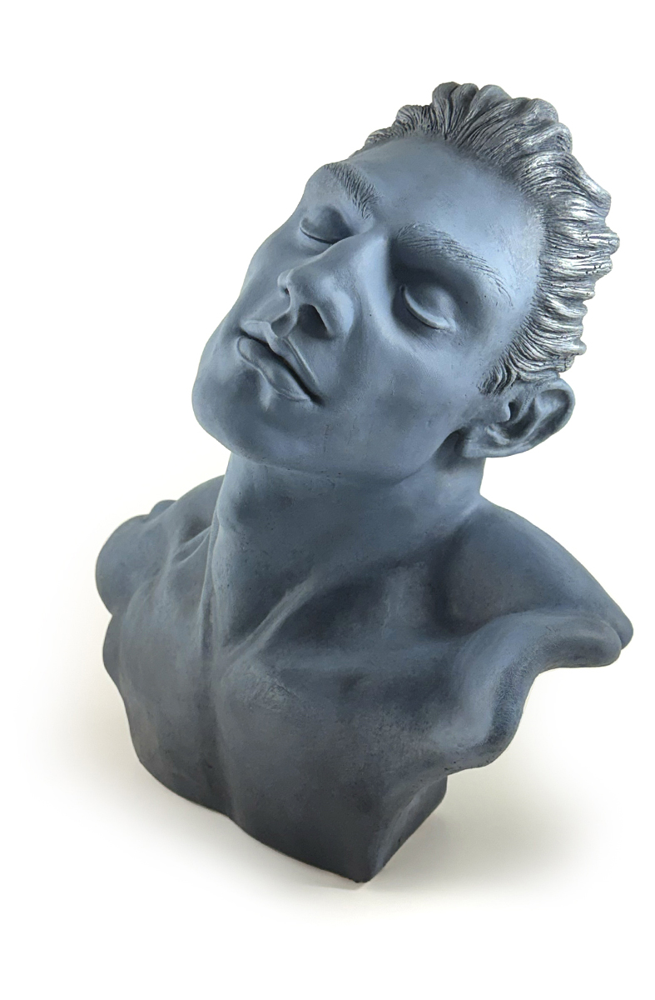

Work in Progress
I was born in Stockholm, Sweden, where I went to school and was always interested in art. I later moved to the US and ended up going to school at the School of Visual Arts (SVA) in New York City. I now live in Fort Lauderdale, Florida, plus spending more time in Stockholm. Doing less and less graphic design, do have a part time job where I have more freedom to spend doing my fine art.
During the Covid-19 pandemic, I began rediscovering my passion for sculpture. I started recreating some of my older works in hydrocal, painting them with acrylics, and also exploring new sculptural forms in clay. You might wonder why I started this artistic journey later in life. The simple answer is a renewed sense of passion and the profound feeling of timelessness that accompanies the creative process.
Exhibitions, Showcase:
| 2026 | Scan Design, Fort Lauderdale |
| 2025 | Art Frenzie, Wilton Manors |
| 2025 | Scan Design, Fort Lauderdale |
| 2025 | Wilton Art Works, Wilton Manors |
| 2024 | Hotspots Art Gallery, Wilton Manors |
| 2023 | Gallery Svea, Stockholm, Sweden |
| 2023 | The Box Fine Art Gallery, West Palm Beach |
| 2022 | Hotspots Art Gallery, Fort Lauderdale |
| 2021 | The World AIDS Museum, Fort Lauderdale |
| 2021 | Wilton Collective, Fort Lauderdale |
| 2020 | Claudia Castillo ART Studio, Fort Lauderdale |
| 2016 | Rossetti Fine Art Gallery, Fort Lauderdale |
| 1993 | Whitney Museum of American Art, New York City |
| 1992 | MTV |
| 1992 | Art Directors Club, New York City |
| 1991 | Visual Arts Gallery, New York City |
Testimonial
“I’m elated to be the proud owner of this stunning sculpture by the very talented artist Roger Schinkler! I first saw Roger’s work at a showing in HOTspots Happening Out Art Gallery with Dennis Dean and I have coveted this piece for almost a year. I’m very appreciative of the fact that Roger recently brought it back from an art exhibit he was a part of in Sweden so it could find its way to our home! It's called Masculina #3.”
– Ken Manford
Contact:
Phone or Text:
US: +1 954.850.9119
SE: +46 76.011.21.31
